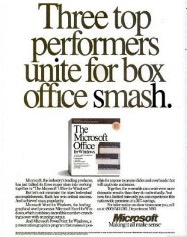

About
Microsoft Office (or simply Office) is a family of server software, and services developed by Microsoft. It was first announced by Bill Gates on August 1, 1988, in Las Vegas. The first version of Office contained Microsoft Word, Microsoft Excel, and Microsoft PowerPoint. Over the years, Office applications have grown substantially closer with shared features such as a common spell checker, data integration etc. Office is produced in several versions targeted towards different end-users and computing environments. The original, and most widely used version, is the desktop version, available for PCs running the Windows, Linux and Mac OS operating systems. Office Online is a version of the software that runs within a web browser, while Microsoft also maintains Office apps for Android and iOS.
Release
Microsoft Office is a suite of desktop productivity applications that is designed specifically to be used for office or business use. It is a proprietary product of Microsoft Corporation and was first released in 1990. Microsoft Office is available in 35 different languages and is supported by Windows, Mac and most Linux variants. It mainly consists of Word, Excel, PowerPoint, Access, OneNote, Outlook and Publisher applications.
Applications
Microsoft Office was primarily created to automate the manual office work with a collection of purpose-built applications.
Each of the applications in Microsoft Office serves as specific knowledge or office domain such as:
- Microsoft Word: Helps users in creating text documents.
- Microsoft Excel: Creates simple to complex data/numerical spreadsheets.
- Microsoft PowerPoint: Stand-alone application for creating professional multimedia presentations.
- Microsoft Access: Database management application.
- Microsoft Publisher: Introductory application for creating and publishing marketing materials.
- Microsoft OneNote: Alternate to a paper notebook, it enables a user to neatly organize their notes.
Besides desktop applications, Microsoft Office is available to use online or from cloud under a lighter (Office Web Apps) and full (Office 365) version. As of 2016, Microsoft Office 2016 is the latest version, available in 4 different variants including Office Home Student 2016, Office Home Business 2016 and Office Professional 2 and the online/cloud Office 365 Home Premium.